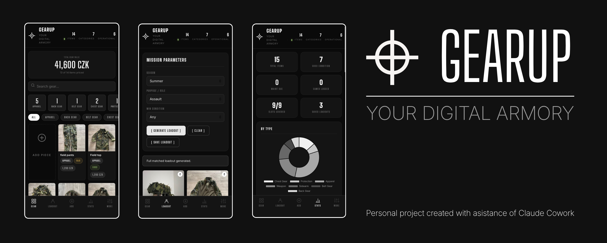

Ideas in motion, code in place.
Vyvíjím hry, webové aplikace a vývojářské nástroje — cokoliv, co situace vyžaduje. Každý projekt je příležitostí naučit se něco nového, vyřešit reálný problém a dodat něco, na co jsem hrdý.
Rád nacházím mezery a vyplňuji je — ať už jde o PWA pro správu vybavení nebo rozšíření pro VS Code na Marketplace. AI využívám jako součást svého pracovního procesu — pohybuji se rychleji, ale všechna rozhodnutí jsou moje vlastní.
Můj přístup je praktický: ponořím se do projektu, zjistím, co funguje, poučím se z chyb a neustále iteruji.
Toto portfolio odráží mou cestu — jak myslím, co tvořím a jak se vyvíjím jako vývojář.

Podívejte se na mou cestu vývojáře níže!
Strukturovaný kurz, který rozšiřuje znalosti Unity workflow a C# skriptování prostřednictvím vedených projektů a praktických herních systémů.
Přátelský úvod pro začátečníky do Unity a C#, použitý jako první zdroj pro pochopení základů skriptování a engine principů.
Projektově orientovaný kurz frontendu, pokrývající HTML, CSS a JavaScript prostřednictvím krátkých a praktických projektů.
Absolvováno: Claude 101, Introduction to Claude Cowork a Claude Code 101 — základy AI, prompt engineering a tvorba s Claude Code.

Claude Code Limity, vždy na očích.
Rozšíření pro VS Code, které zobrazuje limity využití Claude Code (5hodinová relace a týdenní) jako trvalou položku ve stavovém řádku — vždy viditelné, bez nutnosti zadávat příkazy.
Navrženo a řízeno mnou, kód napsán s pomocí AI. Všechna rozhodnutí o funkcích, přístupy a produktová vize jsou moje vlastní.
~/.claude/.credentials.json vygenerované Claude Codeapi.anthropic.com/api/oauth/usage každých 5 minut (endpoint objevený komunitou)
Aplikace pro správu vybavení vytvořená s pomocí AI.
Mobilní Progressive Web App (PWA) pro správu airsoft vybavení, generování loadoutů na mise a sledování gearu přes více zařízení. Navržena v souladu s vizuální identitou mého airsoft týmu RAT PMC — tmavá monochromatická estetika, instalovatelná na telefon i počítač, funguje plně offline.
Navrženo a řízeno mnou, kód napsán s pomocí AI. Všechna rozhodnutí o funkcích, UX design a produktová vize jsou moje vlastní.

Hra založená na přesnosti, zaměřená na načasování, hybnost a kontrolu hráče.
Původně vytvořena jako součást Unity kurzu, později rozšířena mimo tutoriál. Samostatně jsem přidal další systémy, UI a úrovně.

Můj vlastní dlouhodobý solo projekt — aktivně rozpracovaný
First-person, atmosférická hra která se odehrává po zfiktované jaderné katastrofě na území Československa v jaderné elektrárně Jaslovské Bohunice v roce 1977, zaměřená na napětí, navigaci a příběh prostřednictvím prostředí kolem hráče.
Vytvořeno samostatně během několika měsíců. Veškeré modely, textury a level design jsou mojí vlastní prací.

Simulator hodu kostkami.
Malý JavaScript projekt který simuluje hod kostkami. Projekt začal z tutoriálu a byl rozšířen o další funkce a zlepšení UI.
Malý webový projekt zaměřený na základy JavaScriptu, interakci s uživatelem a dynamické aktualizace DOM.
© 2026 Tima Yakushevych